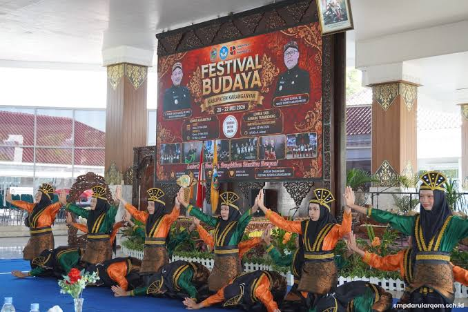

Setiap tahun, alun-alun dan jalan-jalan desa di Karanganyar berubah menjadi panggung yang hidup. Festival Budaya Karanganyar adalah perayaan yang mengumpulkan kesenian dari berbagai kecamatan — dari gamelan yang mengalun hingga tari topeng yang berputar — menjadi satu momentum yang menegaskan bahwa budaya ini belum pernah berhenti berdetak.
Panggung yang Menyatukan Lintas Generasi
Festival ini lahir dari kebutuhan masyarakat untuk merawat kesenian yang dulunya hanya tampil secara terpisah di tiap dusun. Kini, ia menjadi ruang temu antara seniman tradisional berusia lanjut dan komunitas seni muda yang ingin belajar, tampil, dan meneruskan warisan yang hampir terputus.
"Festival bukan sekadar tontonan. Bagi kami, ini bukti bahwa tradisi bisa terus hidup selama ada yang mau merayakannya."
Fakta Menarik
- Festival biasanya menampilkan lebih dari belasan jenis kesenian dari berbagai kecamatan dalam satu rangkaian acara
- Banyak sanggar seni menjadikan festival ini sebagai ajang regenerasi penari dan seniman muda
- Beberapa pertunjukan yang ditampilkan merupakan kesenian langka yang nyaris punah dan dihidupkan kembali khusus untuk festival
- Dikemas sebagai agenda resmi tahunan pemerintah Kabupaten Karanganyar sejak 2008

Mengapa Penting?
Festival Budaya adalah bukti bahwa tradisi tidak harus mati ketika zaman berubah. Ia bisa bertransformasi menjadi ruang ekspresi yang relevan bagi generasi baru, asalkan ada komunitas yang memilih untuk terus merayakannya bersama-sama.